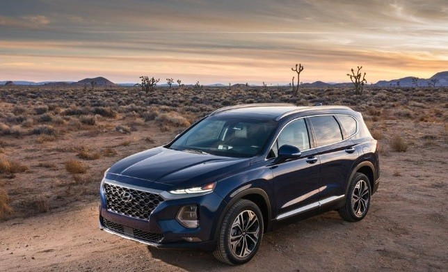

bout a few month ago, Hyundai introduced a mid-life refresh for the Santa Fe SUV, however, the Korean carmaker emphasised that the update is much more than a facelift, since the car is built on an all-new platform, has gained size, features a revamped futuristic design, while also gets tons of additional equipment over the outgoing model.
